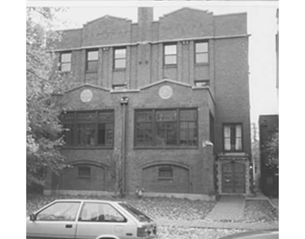

Chapter 15 on the roll
The Omega


- Position on the roll#15
- InstitutionUniversity of Chicago
- Chartered1869
- StatusActive since 1869
- Coat of armsfull-size PDF
Notable brothers of the Omega


In the archive
Pages that name the Omega Chapter or its institution.
Named on 1133 pages across 363 volumes of the archive.
…rom its former prosperous condition. No report has been received from the Omega Chapter for two years. Th,e amendment to the Constitution, passed by the last Convention, has been adopted by the Fraternity. In this connection, the Counci…
Page15…or, JWich. thing some time, which would move and astonish the world OMEGA (University of Chicago 1860). Chapter Rooms, Concordia if he didn't forget it. He died in a few years, at the Hall, 22d street, Chicago; meets Monday evening; corresponden…
…. The new General Catalogue, now in press. It will contain a consid OMEGA (University of Chicago 1869). Correspondence to Mr. erable amount of biographical and bibliographical detail with regard J. D. S. Riggs, University, Chicago, 111. to the 50…
Page8THE DIAMOND. 3 OMEGA (University of Chicago 1869). Correspondence to Mr. This journal, however, takes very little interest in the luck J. D. S. Riggs, University, Chicago, 111. PI (Syracuse Uni…
Page3…Arbor, Mich. '76, Kalamazoo, Michigan. Second bass: Mr. C. Belmont, OMEGA (University of Chicago 1869). Correspondence to Mr. '81, Boston, Massachusetts; Mr. B. L. D'Ooge, '81, Grand J. D. S. Riggs, University, Chicago, 111. Rapids, Michigan. Pia…
Page8…e to Mr. H. S.' of '82. Dearing, Lock Box 468, Hanover. N. H. ii.- At the University of Chicago seven men from the LAMBDA (Columbia College 1842). Correspondence to Mr. V. incoming class have been admitted to the Chapter a fact Spader, Columbia…
Page4…pitality. F. B. Lynch, in behalf of the undergraduates ; and the n. At the University of Chicago Mr. Henry Topping dedicatory prayer by Prof. C. S. Harrington. D. D. The increases the Chapter membership in the Class of 1881, tables having been r…
Page4…r, Mich. the bar in 1848, and thereafter practiced in the courts of OMEGA (University of Chicago 1869).Correspondence to Mr. New York and Brooklyn. For the last seven years of his W. G. Sherer, University, Chicago. 111. life he was secretary and…
Page8…E. S. Sherrill, Lock Box 171, Ann Arbor, Stuart, '80. Michigan. 15. OMEGA (University of Chicago 1869). Zeta : Wm. L. Pierce, '80. Correspondence to Mr. Henry O. Van Schaack, 37 Twenty-second street, Lambda : L. H. Beers, '81. Chicago, 111. 16. P…
Page16…nvention OF THE Dot SI Upsilon Fraternity, HKLD WITH THE OMEGA CHAPTER, University of Chicago, Chicago, III., Wed^esd/y Jim Thui|SD>y, May 18th and 19th, 1881. No. X of the Printed Series. PUBLISHED BY THE EXECUTIVE COUNCIL. 1881.
…Arbor, Mich. Sigma� Charles H. Payne. 15. OMEGA Gamma James H. Knapp. � (University of Chicago, 1869).� Corres pondence to Mr. J, P. Gardner, University of Chicago, Zeta � Edward N. Pearson. Chicago, 111. , Lambda � Not elected. Jfiryjpa� Char…
Page8…ion of the Psi Upsi The crimson on her sails lon Fraternity, held with the Omega Chapter, University Now deepens, and now pales, All in the gloaming ; of Chicngo, Chicago, 111., commenced Wednesday, The convention was Waves redden with th…
24: DISBURSEMENTS From Convention Fund May 17, 1881. Omega Chapter, 1881 Convention $150 00 " " 17, Bridgman for printing, per bill 14 50 " " 25, Council Delegate's expense to Chicago Con.. 64 80 " June 2.5, Crichto…
Page24…to maintain. Our Chapter is the nucleus of a large northwestern Omega. University of Chicago, in which our The alumni association, and our movements are commend Chapter has been established since 1869, has been ed that by There must be a Chap…
…C. Omega (University of Chicago, 1869) Howard B. Grose, Correspondence to Omega Chapter of Psl 39 Park Row, N. Y. Upsilon, 3400 Cottage Grove Avenue, Chi Benjamin H. Bayliss, cago, 111. 1 70 Broadway, N. Y. Pi (Syracuse University, 1875…
Page13…C. Omega (University of Chicago, 1869) Howard B. Grose, Correspondence to Omega Chapter of Psi 39 Park Row, N. Y. Upsilon, 3400 Cottage Grove Avenue, Chi Benjamin H. Bayliss, cago, 111. 1 70 Broadway, N. Y. Pi (Syracuse University, 1875)…
Page13…ity of Chicago, 1869) Herbert L. Bridgman, President . . Correspondence to Omega Chapter of Psi S3 Park Place, N. Y. Upsilon, 3400 Cottage Grove Avenue, Chi Charles W, Smiley, cago, III. Smithsonian Institution, Washington, D.,C. Pi (Syra…
Page17…ity of Chicago, 1869) Herbert L. Bridgman, President . . Correspondence to Omega Chapter of Psi S3 Park Place, N. Y. Upsilon, 3400 Cottage Grove Avenue, Chi Charles W. Smiley, cago, 111. Smithsonian Institution, Washington, D. C. Pi (Syra…
Page13…ity of Chicago, 1869) Herbert L. Bridgman, President . . Correspondence to Omega Chapter of Psi 53 Park Place, N. Y. Upsilon, 3400 Cottage Grove Avenue, Chi Charles W. Smiley, cago, 111. Smithsonian Institution, Washington, D. C. Pi (Syra…
Page13…hi (Michigan) undergraduates enjoy an excursion to Omaha, Neb April, 1869. The Omega Chapter established in Chicago University . April 17, 1869. Conveniion held with the Theta (Union) Chapter . . . May 19, 20, '869. Executive council of five…
…state to the Convention the condition of the University of Chicago and the Omega Chapter, and that the making and consideration of such statement be the special order of business for the first sesssion on May 7th." The Committe on the Co…
…ty of Chicago having ceased to exist, the Council has to announce that the Omega Chapter has likewise dissolved. Its archives are in possession of the Council. Finances. The Convention is referred to the Treasurer's Eeport herewith Submi…
Page13…ity, Wesleyan University, Amherst, Bowdoin, Dartmouth, Hamil ton, Cornell, University of Chicago, Kenyon, Syracuse Univer sity, Union College, and the University of Rochester. At the front sat E. C. Stedman, Daniel H. Chamberlain, William E. Robi…
Page4…"Convention Greeting Song," for the 48th annual Convention, held vrith the Omega Chapter, in Chicago, May 18, 1881. PSI UPS. [Page 78.] At the close of an entertainment given him by the Chi Chapter, J. Bayard Taylor wrote these verses, a…
Page250…l, shall examine into the expediency of estab lishing a Chapter in the new University of Chicago, with power, subject to the approval of the Council, to form a tentative, provisional organization, with a view to applying for admission to the Frat…
…report of the Special Committee upon the establishment of a chapter at the University of Chicago, and the petition lor a chapter at Dickinson College, which were referred to the Committee on Unfinished Business; the petition from the order of Rh…
…ter at Chicago for the revival of the charter of the Oniega Chapter in the University of Chicago. Bros. H. B. Grose (r, '76) and Howe {B) spoke in favor of the resolution , which on roll call, was adopted by the following vote : Aye .-Theta, Delt…
…, of the University of Wisconsin, (Appendix B), from the Omega Club,of the University of Chicago (Appendix C), from theEulexian Society (Appendix D) and the Kappa Gamma Chi Society( Appendix E) of St. Stephen's College, at Annandale-on-the-Hudson…
…d in 1858, Kenyon College in i860, the University of Michigan in 1865, the University of Chicago in 1869, Syracuse University in 1875, Cornell University in 1876, Trinity College in 1880, and the Lehigh University in 1884. The University of Penns…
…harter which returned by one of its was members when the doors of the old University of Chicago were closed. Therefore, an undergraduate membership is stilli lacking, although the Omega Club, an organization of nine men in the upper classes of t…
Page25…lark, D. D., (Delta, '65), Henry E. Bodman (Phi, '96), and others. Omega. University of Chicago. This branch of the Fraternity has not yet been permitted to resume its active functions, although the Omega Club, composed of undergraduates, stand…
…following is a opy : " This is to certify that at a regular meeting of the Omega Chapter of the Psi Upsilon Fraternity, held April 27, 1896, Richard B. Twiss, Harry W. Stone, and William S. Bond, were duly elected delegates to represent t…
…rd Avenue Baptist Church of Detroit, and now Professor of Sociology in the University of Chicago. During the nineteen years of its existence the Psi Upsilon Alumni Association of Detroit has done good work for the Diamond Brotherhood. By its reun…
THE RHO OF PSI UPSILON. 167 and thus the Omega Chapter and the Chi Chapter owe most of their charter members to the very fraternity whose chapter in Wisconsin has been transferred to us. The Detroit alumn…
…, '99, Milwaukee, Wis. Walter Roy Weeks, '99, Jackson, Mich. OMEGA CHAPTER UNIVERSITY OF CHICAGO. tNewton Calvin Wheeler, '73, Chicago, 111. tCharles Wheeler Nicholes, '75, Chicago, 111. tRichard Bentley Twiss, '75, Chicago, 111. James Patterson…
Page35…blish ment of a chapter, which shall be known by the name of Omega, at the University of Chicago be granted, and that the action upon the question be immediately taken by the several chapters of the Fraternity. General Resolution No. 10. Resolved…
…sion imposed by the Conven tion of 1897 upon certain members of the former Omega Chapter, all of which, under the rules, were referred to the Committee on New Business. The President then appointed the following Standing Committees : To N…
…nsent of the other branches initiated, in April, 1869, the pioneers of the Omega Chapter at the University of Chicago. Be ginning life with bright prospects, and with excellent charter members, the Omega necessarily shared the declining f…
…members, in addition to members indicated making the total twenty-nine. + The Omega Chapter had one active member who had left College, making the total natoary nineteen.
Page14…he CONVENTION OF THE Psi Upsilon Fraternity HELD WITH THE OMEGA CHAPTER UNIVERSITY OF CHICAGO CHICAGO, ILLINOIS May 13 and 14, 1909 No. XXX.VIII of the Printed Series PUBLISHED BY THE EXECUTIVE COUNCIL The Seventy-sixth Year of the Frater…
…printed copy of the report to be submitted herewith. Old Omega Archives. Omega Chapter has requested that the The constitution and archives of the Old Omega, which were transmitted to the Council when the old Chicago University closed i…
Page21…ng the thanks of the Convention to the Psi Upsilon Club of Chicago and the Omega Chapter, to President Burton of the University of Minnesota, to the Mu Chapter, and to Bro. Ellis P. Egan (Omega '11), and a special resolution to Brother Jo…
…University of Michigan 702 So. University Ave., Ann Arbor, Mich. OMEGA University of Chicago 5639 University Ave., Chicago, 111. PI Syracuse University 101 CoUege Place, Syracuse, N. Y. CHI Cornell University 1 Central Ave., Ithaca, N. Y. B…
…University of Michigan 702 So. University Ave., Ann Arbor, Mich. OMEGA University of Chicago 5639 University Ave., Chicago, 111. PI Syracuse University 101 College Place, Syracuse, N. Y. CHI Cornell University 1 Central Ave., Ithaca, N. Y…
…University of Michigan 702 So. University Ave., Ann Arbor, Mich. OMEGA University of Chicago 5639 University Ave., Chicago, 111. PI Syracuse University 101 College Place, Syracuse, N. Y. CHI Cornell University 1 Central Ave., Ithaca, N. Y…
…University of Michigan 702 So. University Ave., Ann Arbor, Mich. OMEGA University of Chicago 5639 University Ave., Chicago, 111. PI Syracuse University 101 College Place, Syracuse, N. Y. CHI Cornell University 1 Central Ave., Ithaca, N. Y…
…^University of Michigan 702 So. University Ave., Ann Arbor, Mich. OMEGA University of Chicago 5639 University Ave., Chicago, 111. PI Syracuse University 101 College Place, Syracuse, N. Y. CHI Cornell University 1 Central Ave., Ithaca, N. Y.…
…HI University of Michigan 702 So. University Ave., Ann Arbor, Mich. OMEGA University of Chicago. . . 5639 University Ave., Chicago, IU. PI Syracuse University 101 CoUege Place, Syracuse, N. Y. CHI Cornell University 1 Central Ave., Ithaca, N…
…HI University op Michigan 702 So. University Ave., Ann Arbor, Mich. OMEGA University of Chicago. .5639 University Ave., Chicago, 111, . PI Syracuse University 101 CoUege Place, Syracuse, N. Y, CHI Cornell University 1 Central Ave., Ithaca, N…
…HI University of Michigan 702 So. University Ave., Ann Arbor, Mich. OMEGA University of Chicago. 5639 University Ave., Chicago, 111. . . PI Syracuse University 101 College Place, Syracuse, N. Y. CHI Cornell University 1 Central Ave., Ithaca,…
…PHI University of Michigan 702 So. University Ave., Ann Arbor, Mich. OMEGAUniversity of Chicago. .5639 University Ave., Chicago, IU. . PISyracuse University 101 CoUege Place, Syracuse, N. Y. CHICornell University 1 Central Ave., Ithaca, N. Y. B…
…University of Michigan 702 So. University Ave., Ann Arbor, Mich. OMEGA University of Chicago. . . 5639 University Ave., Chicago, 111. PI Syracuse University 101 College Place, Syracuse, N. Y. CHI Cornell University 1 Central Ave., Ithaca,…
…nyon College Gambier, Ohio PHIUniversity of Michigan Ann Arbor, Mich. OMEGAUniversity of Chicago. 5639 University Ave., Chicago, IU. . . PI Syracuse University .101 CoUege Place, Syracuse, N. Y. CHI Cornell University 1 Central Ave., Ithaca, N.…
…ood, and were mighty fortunate to have a goodly Associate Editor. OMEGA University of Chicago THE university year of 1923-1924 ing down an outfield's job on the Varsity ASdraws to its close, the Omega chapter nine, while Brothers Barnes and Di…
Page52…wide reputation of A. A. Stagg who is known as the "Grand Old Man" at the University of Chicago. BARTLETT GYMNASIUM, UNIVERSITY OF CHICAGO October 29, 1923. TO ALL FRIENDS OF COLLEGE FOOTBALL: It seems like a matter of little consequence for o…
…College Gambier, Ohio PHI Uiwversity of Michigan Ann Arbor, Mich. OMEGA University of Chicago. .5639 University Ave., Chicago, 111. . PI Syracuse University 101 College Place, Syracuse, N. Y. CHI Cornell University 1 Central Ave., Ithaca,…
…College Gambier, Ohio PHI University of Michigan Ann Arbor, Mich. OMEGA University of Chicago. .5639 University Ave., Chicago, lU. . PI Syracuse University 101 College Place, Syracuse, N. Y. CHI Cornell University 1 Central Ave., Ithaca, N…
…College Gambier, Ohio PHI University of Michigan Ann Arbor, Mich. OMEGA University of Chicago. 5639 University Ave., Chicago, 111. . . PI Syracuse University 101 CoUege Place, Syracuse, N. Y. CHI Cornell University 1 Central Ave., Ithaca,…
…College Gambier, Ohio PHI University of Michigan Ann Arbor, Mich. OMEGA University of Chicago 5639 University Ave., Chicago, IU. PI Syracuse University 101 College Place, Syracuse, N. Y. CHI Cornell University 1 Central Ave.,* Ithaca, N. Y.…
…ollege Gambier, Ohio PHI ^University of Michigan Ann Arbor, Mich. OMEGA ^University of Chicago 5639 University Ave., Chicago, 111. PI Syracuse University 101 College Place, Syracuse, N. Y. CHI Cornell University 1 Central Ave., Ithaca, N. Y.…
…llege Gambier, Ohio PHI ^University of Michigan Ann Arbor, Mich. 0MEG.\ ^University of Chicago 5639 University Ave., Chicago, 111. PI Syracuse University 101 College Place, Syracuse, N. Y. CHI Cornell University 1 Central Ave., Ithaca, N. Y.…
…n College. Gambier, Ohio PHI Univrsity of Michigan Ann Arbor, Mich. OMEGAUniversity of Chicago 5639 University Ave., Chicago, 111. PI Syracuse University 101 College Place, Syracuse, N. Y. CHI Cornell University 1 Central Ave., Ithaca, N. Y. B…
…gnments for Current College Year 5 Dr. Max Mason, Rho '98 New President University of Chicago . . 6 Nicholas Murray Butler, Lambda '82, Signally Honored . . .15 Notable Gathering of Greek Letter Men in Japan . . . . .19 Warning ^Another Bo…
…s an nounced in the last issue of the Diamond, is the new President of the University of Chicago. This dinner will go down in history as the greatest Psi U celebra tion in the records of our fraternity, for the older Alumni present were all agree…
…e La Salle Hotel, Chicago, in honor of Brother Max Mason, President of the University of Chicago. Brother Earl Babst reminisced in early Rho history with which I am quite familiar. To Albert P. Jacobs, Phi, should go the honor for doing the most…
…Editor. PHI University of Michigan (No communication received) OMEGA ^University of Chicago addition to the rigors encountered Edwin B. Adams Chicago, HI. INin viewing the hundred or so games John P. Anderson Red Wing, Minn. of the "National…
Page58…bler, Ohio PHIUniversity of Michigan 1000 Hill St., Ann Arbor, Mich. OMEGA University of Chicago 5639 University Ave., Chicago. IlL PI Syracuse University 101 College Place, Syracuse, N. Y. CHI Cornell University 1 Central Ave., Ithaca, N. Y. B…
…president, when we heard Brother Max Mason, Rho '98, now President of the University of Chicago, tell us about his submarine de tector. This year we entertained more Milwaukee boys in various Psi U chapters than at any time since the war. It was…
…Ohio PHI 'University of Michigan 1000 Hill St., Ann Arbor, Mich. OMEGA University of Chicago 5639 University Ave., Chicago, 111. PI Syracuse University 101 College Place, Syracuse, N. Y. OHI Cornell UNivERSiry 1 Central Ave., Ithaca, N. Y.…
…f the American Chemical Society at a banquet of MidWestern chemists at the University of Chicago. Most of his patient and fruitful work in the laboratory has resulted in the evolution of new and better medicines from old remedies, and, according…
…of the future, the goal which is in the mind of President Max Mason of the University of Chicago, President Mason has just completed two years as head of the Midway iastitution. Its growth in buildings and in service has been great. Its towers ar…
…HE CONVENTION OF THE Psi Upsilon Fraternity HELD WITH THE OMEGA CHAPTER UNIVERSITY OF CHICAGO CHICAGO MAY 10th TO 12th, 1928 PUBLISHED BY THE EXECUTIVE COUNCIL The Ninety 'Fifth Year of the Fraternity 1928 SI
…year, the 95th Annual Convention of Psi Upsilon will be held THIS with the Omega Chapter. The dates have been for Thursday, set Friday and Saturday, May 3, 4 and 5. This advance notice is given so that the chapters and alumni may put thes…
Solakium. Omega Chapter House prsL"!*- DixiNG Room, Omega Chapter IIousk
…er and thus it is impossible to relate exactly the actual number present. The Omega Chapter and her alumni together with the alumni associa tion of Psi Upsilon in Chicago were ideal hosts every detail of the pro gram and arrangements gave e…
…herst College; Percy H. Boynton, Gamma '97, Professor American Literature, University of Chicago. After discussing the details of this noteworthy offer of encouragement to our chapters in the matter of scholarship, Dr. George Henry Fox, Upsilon '…
…pril i, 1928, to March 30, 1929, inclusive. Convention Fund Expenditures Omega Chapter acct. 1928 Convention $500.00 Printing Convention Records i5i-95 Excess of Income over Expenditures 85.05 $737.00 Income Accrued Income by $1.00 p…
Page28…lds, for position of Editor for the coming year. Associate Editor OMEGA University of Chicago EARLY closing of the Univer January, however, we find that the added THE sity last Quarter because of influ enza gave the Omega men a splen did vac…
…upon a foundation supplied by members of another fraternity, and thus the Omega Chapter and the Chi Chapter owe most of their charter members to the very fratemity whose chapter in Wis consin has been transferred to us. The Detroit alumn…
…Otis E. Randall, Dean of Brown University, Brother Percy H. Boynton of the University of Chicago and Brother Thomas C. Esty, Dean of Amherst College. PREPARATION OF UNDERGRADUATES FOR INITIATION: Our chapters have always recognized the vital need…
24 THE DIAMOND OF PSI UPSILON OMEGA University of Chicago Class of 1933 Robert Lee Bibb, Jr Memphis, Tenn. Arthur C. Bohart Chicago, III. Eugene H. Gubser Tulsa, Okla. Edward M. Haydon Chicago, III. Harvey…
…imit. He graduated with the degrees of B.S. and M.S. and received from the University of Chicago the degree of Ph.D. Brother Kingsley has been in Wall Street since 1883 and is now and has been for several years the President of the U. S. Trust Co…
…cently resigned. Brother Milliken has successfully handled the case of the Omega Chapter of Psi Upsilon before the Supreme Court of Illinois in regard to their exemption from taxation. Within the last year he received his final victory on…
…em of grading but the comparative standings are, of course, relative. THE UNIVERSITY OF CHICAGO Office of the Recorder RECORD OF THE UNDERGRADUATE FRATERNITIES, WINTER QUARTER, 1930 Rank Fraternity Grade -<3rade Pts. Per M;j ^^ No. Graded :Pled…
…ommittee. Address, Dr. Percy H. Boynton, Professor of American Literature, University of Chicago. Presentation to Psi Upsilon Fraternity, Jack B. Snyder, President, Alumni Association of Psi Upsilon in Chicago, the donors. Address, Edward L. Stev…
…Theme of President R. G. Sproul's Inaugural Address in Greek Theatre 135 University of Chicago Adopts Radically New Education Plan 143 The First Hundred Years of the Delta 147 The College Tablet, January 15, 1850 149 Published by the Delta Chap…
…ort said, "the alliance of the Institute of American Meat Packers with the University of Chicago is im portant and promising." In New York University, the chancellor remarked that "the School of Retailing, in its close connection with the great d…
…ommittee. Address, Dr. Percy H. Boynton, Professor of American Literature, University of Chicago. Presentation to Psi Upsilon Fraternity, Jack B. Snyder, President, Alumni Association of Psi Upsilon in Chicago, the donors. Address, Edward L. Stev…
…. Robert Rowe Toledo, Ohio Edgar Wertheimer, Jr Newport News, Va. OMEGA University of Chicago Fran'k Aldridge Tulsa, Okla. John Baker Chicago, 111. Edward Cullen Wilmette, 111. Gutherie Curtis Chicago, 111. John Doerr Chicago, III Marvin Elkin…
UNIVERSITY OF CHICAGO'S NEW PLAN AWAKENS ENTHUSIASM OF STUDENTS* By R. L. DUFFUS the University of Chicago last September received the first WHEN freshman class to be ha…
…skey has left to join in a missionary expedition Associate Editor OMEGA University of Chicago FEBRUARY 1, the Omega held and Womer are on the Freshman squad. ON its 55th annual initiation at the Inter-Fratemity Club. banquet Six Brother Womer…
…he assignments: Tau University of Pennsylvania Brother Werrenrath Omega University of Chicago Brother Naylor Omicron University of Illinois Brother Corcoran Delta New York University Brother Douglas EtoH-Lehigh. University Brother Weed Mi/…
…Officers of the Association held a joint meeting with the Trustees of the Omega Chapter at the Chicago Athletic Club on December 27th to discuss ways and means of increasing the contact of the Chapter and Chi cago Alumni. Plans were form…
…June as Professor and Director of Physical Education and Athletics at the University of Chicago. He has served the University for forty-one consecutive years. He retires in accordance with the regulation of the University that faculty members mu…
…ill on the 9th floor. Just drop in and join the brothers "Old and Young." The Omega Chapter house at the University of Chicago will be open all summer, as usual, for summer students. Each evening there will be a number of brothers from the O…
…ddress: Percy Holmes Boynton, Gamma '97 (Professor of American Literature, University of Chicago). Address: Hubert Carpenter Mandeville, Theta '88, (President of the Alumni Association Theta Chapter, and Chairman of the Theta Chapter Centennial C…
…yielding my office for the next introduction to Herbert S. Houston, of the Omega Chapter, class '88, Brother Houston:" Brother Houston, former member of the CouncU, in introducing the anonymous donor of the scholarship awards, seud: "Brot…
THE DIAMOND OF PSI UPSILON 283 Dr. Henry Topping, of my own Omega Chapter, class of '81, has been a leading educator and Baptist missionary for a great many years. In fact, it is quite within the mark to say that during the…
…s., Aug. 6, 1858. He prepared at LaCrosse, Wis., High School, attended the University of Chicago for a year, and came to Brown in 1877. He won his A.B. in June, 1880, his A.M. in 1883, and his LL.B. at Washington University, St. Louis, in 1885. B…
…tackles made him outstanding as a roving center. Coach Shaugnessy, of the University of Chicago declares that he is one of the best Captains that he has ever had the oppor tunity to coach. His conscientious managing of the team gained for him t…
…inion of those contacted by The Times poU at Michigan, Cornell, Wisconsin, University of Chicago, University of CaUfornia, Brown, Syracuse and WilUams that were the administrations of these campuses able to introduce a complete and modern dormito…
…ughey, to the executive committee of the Inter- Associate Editor. OMEGA University of Chicago the last communication, Interfraternity Council, is doing a fine WITH theOmega chapter had just closed a successful rushing sea job in interesting pr…
…e '18 Hiram S. Cody '08 Herbert S. Reynolds '04 Frank A. Willard '18 OMEGAUNIVERSITY OF CHICAGO Edward H. Ahrens '06 Charies D. W. Halsey '00 Rudy D. Matthews '14 R. Bourke Corcoran 'IS George H. Lindsay '10 James M. Nicely '20 Harley C. Dariing…
…865 PHI University of Michigan 1000 Hill St., Ann Arbor, Mich. 1869 OMEGA University of Chicago 5639 University Ave., Chicago, 111. 1875 PI Syracuse University 101 College Place, Syracuse, N. Y. 1876 CHI Cornell University Forest Park Rd., It…
Page253…high esteem in which his own undergraduate chapter holds him, turn to the Omega Chapter communication to The Diamond which is published else where in this issue. Since everybody is familiar with Brother Berwanger's exploits on the interc…
…the football activities of Brothers Ell Paterson and Jay Berwanger of the Omega Chapter. The reason why such articles are published in The Diamond is because the very large majority of our subscribers are members of the class of 1926 or…
Page12…chusetts) College where he remained for two years. Then he moved on to the University of Chicago where he remained for forty -one years, establishing for himseK the right to be mentioned in the same breath with such football immortals as KJiute R…
…nager of the Hammond office, and who was recently elected president of the University of Chicago Alumni Association. Brother Colby is Omega '24. They're thinking of renaming one of Vancouver's residential apartment areas "Psi U Lane" since five…
THE DIAMOND OF PSI UPSILON 171 OMEGA University of Chicago Class of 1940 John R. Anderson Evanston, 111. Kenneth J. Becker Chicago, 111. James G. Bell Chicago, 111. Richard G. Caulton Chicago, 111. William T.…
…well on its way race, and with a place in the soft ball to completion, the Omega Chapter looks tournament now in progress, should back on a period of intense and varied finish up well out in front. activity. The outstanding event of the W…
Page25…IOTA John A. Van Winkle, Howell, Mich. Kenyon College OMEGA Class of 1939 University of Chicago Albert 0. Goodale, Jr., Hampton, Va. Class of 1939 Class of 1941 William Hartz, Chicago, 111. Eugene Malcolm Anderson, Jr., Class of 1940 Chicago, 11…
…f Astronomy and Astro the staff of the Monmouth Daily Atlas physics at the University of Chicago, as managing editor, a post which he oc died November 25, 1937, in St. Peters cupied until he became city editor of the burg, Florida, at the age of…
…born, Jr., holding second place in intramural ath- Associate Editor OMEGA University of Chicago The pledging of seventeen men cli ference Champion quartermiler, we maxed one of our most successful rush have Brothers Bonniwell, McClimon, ing seas…
…burn, Jr., strong. The alumni represented a great Associate Editor OMEGA University of Chicago The new Omega trustees are : Frank G. Robert W. Jampolis, '41, and Rob Todd, '35; Henry Darlington, '07; ert P. McNamee, '41, have been elected Charl…
…c director and football coach at 'But I saw a greater kicker. Remember the University of Chicago. For 41 years BiUington (Eric BiUington, EpsUon Phi he had taught football there, was '12)at McGiU before the war?' Of credited with such innovations…
…S ANNOUNCED BY THE CHAPTERS OMEGA bert Parker, Minneapolis, Minn.; Ernie University of Chicago Small, Jr., Hackensack, N. J.; James Class of 1942: Edward W. Caulton, Egan Smith, Jr.; Minneapolis, Minn.; Hugh Thompson, Jr., Minneapolis, Chicago,…
…* University of Michigan 1865 1000 Hill St., Ann Arbor, Mich. OMEGA il University of Chicago 1869 5639 University Ave., Chicago, III. PI n Syracuse University 1875 101 College Place, Syracuse, N.Y. CHI X Cornell University 1876 F…
Page67…Stagg was forced to retire from that by dropping a yard or so back of the University of Chicago seven years a,go because he had reached the age limit. He had coached there forty-one years; before that two years at the In ternational Y. M. C. A.…
…was held at the Hotel Sherry out near Colonel A. M. Brown, former com the University of Chicago on November 24, which came on the day following the manding officer of the "Irish" at Van couver, has been appointed Chief of the new Thanksgiving da…
…A guidance of Social Chairman Dwight Adams the entire week-end was enjoyed University of Chicago by all. The high point was the annual The rushing period came to a success J-Hop with Tommy Dorsey's orchestra. ful close this year for the Omega. Th…
…ear. Brother Dickson, 36 years old, graduated with an A.B. degree from the University of Chicago in 1924. As an undergraduate, he was an out standing scholar and athlete. As guard on Chicago's football eleven, he was named the outstanding player…
…* University of Michigan 1865 1000 Hill St., Ann Arbor. Mich. OMEGA Q University of Chicago 1869 6639 University Ave., Chicago, III. PIn Syracuse University 1875 101 College Place, Syracuse, N.Y. CHI X Cornell University 1876 Forest Park…
Page63…y of Michigan 1000 Hill Street January 26, 1865 Ann Arbor, Michigan Omega University of Chicago 5639 University Avenue April 17, 1869 Chicago, Illinois Pi Syracuse University 101 College Place June 8, 1875 Syracuse, New York 13
Page18…f later to become President of the old the Baptist denomination in Roches- University of Chicago, and Amos J. ter, wishing to see the establishment Barrett, all of the class of 1854. Of of a university in western New York, these three Barrett alo…
…reception, and to the THETA Henry C. Wood '83. DELTA Eugene F. Pearce '81, Frederick Omega Chapter. S. Wheeler '81, Alden A. Freeman '82, The annual communication, signed Robert W. Higbie '82, George M. Dun can '81. by Thomas Thacher, Beta '71, pre…
…a Convention for his first time, at the older generation of the Frater the Omega Chapter in Chicago on nity; as an undergraduate he had May 18 and 19, 1881. attended the Motiier Chapter's De The Convention's Committee on cennial Celebrati…
Page8…y of the Fraternity. CERNING UNIVERSITY OF WISCONSIN 5% X 8 in. 22 pp. AND UNIVERSITY OF CHICAGO, 1894. DELTA DELTA OF WILLIAMS COLLEGE, Prepared by Executive Council, 1911. Compiled and published by April 1894. 7 pp. Edward H. WiUiams, Beta '72,…
Page19…1857. Omaha, Neb April, 1869. The Upsilon Chapter established in Rochester Univer The Omega Chapter established in Chicago University . April 17, 1869. sity Feb. IS, 1858. Convention held with the Theta' (Union) Chapter. , . May 19, 20, 869. Convent…
…., O'40, 7168 Normal Blvd. Cooper. S; O., 0'18, J. L. Sugden Adv. Science, University of Chicago Keefer. W. D,, P'15, 20 N. Wacker Dr. Co., 1313-307 N. Michigan Gregory, S. S,, B'll, Gregory, Van Cleave Kegley, R. B., Om'20, Moore, Case, Lyman Co…
Page12…y. Poor grades Omega follow. A few specific causes may be even more At the University of Chicago the Inter accurately to blame. The house is too noisy fraternity Council takes an accumulative
…at 17915 Shaker Heights, Cleve Jack, onetime two-year member of the land. University of Chicago Law School, is Sidney R. Small, '09, president of the with the Household Finance Phi Alumni Association, is an invest Corpora tion at its Springfield…
…MEGA caliber recommendedhighly by the alumni (who are affronted if we find University of Chicago them poor enough to disregard entirely) Chicago's busiest quarter nears its close and miss the cream of the crop to a more and the brothers of the Om…
…sence is a distinct loss to the house. OMEGA CHAPTER Chapter Communication University of Chicago With the semester just getting under Chapter Communication way the Phi under the leadership of Brother Wood, Rushing Chairman, is In THIS, the regula…
Page53…we Mason of the Rho was president of find Willcox of the Gamma at Cor the University of Chicago before nell and, until his death, Emery of becoming president of the Rocke the Kappa at Yale; in the fine arts, feller Foundation. Bossange of the De…
…r, the A small group of alumni of the need for more frequent gatherings of Omega Chapter made up their minds our alumni has been apparent. We recently that their chapter should needed to know each other better have a well-organized viril…
…raries, and Dan H. Brown, Omega '16, are in the center of the group at the Omega Chapter House. organization, the completeness of its content, sity. The presentation was made by Dan the inclusion of reprints of earlier histories of H. Br…
…Albert C. Jacobs, 21 U.S.N. Beta Chapter Lt. H. D. Hadden, '21 U.S.N.A.C. Omega Chapter ' Capt. Martin Fenton, U.S.M.C. I.t. Robert M. Jones, '39 U.S.A. Gamma Chapter Pi Chapter T. C. Heisey, Jr., '40 U.S.A. Yoeman James Decker, '32 U.…
…ty of Michigan 1000 Hill Street January 26, 1865 Ann Arbor, Michigan Omega University of Chicago 5639 University Avenue April 17, 1869 Chicago, Illinois Pi Syracuse University 101 College Place June 8, 1875 Syracuse, New York Chi Cornell Universi…
…rting post; with the help of Prexy Alan Valentine, Psi U's are still OMEGA University of Chicago running the University of Rochester. Dave Walworth and Jim Secrest won po Life at the Omega has, of course, been sitions on the powerfiil Board of Co…
…ol of Business Adminis assistant professor of astronomy and tration at the University of Chicago in physics at Wesleyan University in 1882. 1939. He was President of the Omega He subsequently taught at Centenary Chapter iri his year. He was capta…
…ich. . Sidney R. Small, '09, 2356 Penobscot Bldg., Detroit, Mich. OMEGA Q University of Chicago 1869 .c/o J. C. Pratt, 4824 Lake Park Ave., Chicago, III. . Dan H. Brown, '16, 1228 Lake St., Evanston, 111. PI n Syracuse University 1875 c/o Alum…
Page35…e of the Directors' Meeting. his bombing squadron in the Atlantic Theatie. Omega Chapter Initiates Three It was interesting to all Omega broth The rare event for these times of an ers to learn of the exploit of Capt. initiation dinner att…
…. . . Sidney R. Small, '09, 2356 Penobscot Bldg., Detroit, Mich. OMEGA fi University of Chicago 1869 .c/o J. C. Pratt, 4824 Lake Park Ave., Chicago, III. . Dan H. Brown, '16, 1228 Lake St., Evanston, 111. PI II Syracuse University 1875. c/o Al…
Page35…, Mich. Sidney R. SmaU, '09, 2356 Penobscot Bldg., Detroit, Mich. OMEGA n University of Chicago1869 .c/o J. C. Pratt, 4824 Lake Park Ave., Chicago, III. . Dan H. Brovm, '16, 1228 Lake St., Evanston, lU. PI n Syracuse University 1875 c/o Alumni…
Page35…s to discontinue Robert Elliott, '46, has been an especially activity, the Omega Chapter has continued active president during this past term and has to function as a done a tmly remarkable job in carrying on the working unit. At the begi…
…he scholastic standing is OMEGA correspondingly notable, the average being University of Chicago We have endeavored to keep letters mov higher at present than it has been for many months. ing regularly to overseas members by enlist The Iota Alumn…
…t Edmond Perry, '48, has been a member of the staff of the Collegian OMEGA University of Chicago since the revival of that campus newspaper in As a news item you may wish to report the summer of 1944. He is now the Associate the success of our Ap…
…"Convention Greeting Song," for the 48th annual Convention, held with the Omega Chapter, in Chicago, May 18, 1881. PSI UPS. [Page 78.] . At the close of an entertainment given him by the CM Chapter, J. Bayard Taylor wrote these verses,…
Page280…ere wherever there is a chance for them to do so. Last year dressed to the Omega Chapter. In view of the current opinions of the they took aU the first prizes in the Royal Germans as a people, it would seem that Academy and no German got…
…Flagg, Whit Ingraham, Dick Downing, Bfll Morrison, Charles Metzger, OMEGA University of Chicago Jack McLusky, and Paul Fulmer. On March 24, foUowdng a three-year period Spring term elections resulted in Jack Bock duringwhich the University has r…
…l Convention 1946 98 Psi U Personality of the Month 99 Fraternities at the University of Chicago 102 Report of Our Special Committee on Improving Relations of Chap ters with Educational Institutions (Second Installment) ...... 104 Names in the Ne…
…ernational Relations at the vock, '33; Mfles Gordon, '27; Phfl Gross, '26; University of Chicago in 1941, having written Gerry Halpenny, '30; Murdock Harvie, '43; SeweU Hubbard, '37; Carlos HuU, '34; Thurs his dissertation under Professor Quincy…
…, Mich. Sidney R. SmaU, '09, 2356 Penobscot Bldg., Detroit, Mich. OMEGA fi University of Chicago 1869 5639 University Ave., Chicago, 111. J. C. Pratt, '28, 4824 Lake Park Ave., Chicago, IU. PI II Syracuse University 1875 101 College PL, Syracuse,…
Page35…future of fra society, "the greatest honor that can come ternities on the University of Chicago campus. to a Hamilton man." Brothers Bob Pigott and In the past, third and fourth year students Frank Fry were honored by election to D.T., of the Co…
…. After such a weekend, school on Mon day morning had a dismal ring. OMEGA University of Chicago We have an outstanding personage in our On the surface, here at the Omega, every midst, who needs no introduction to any thing is in tip-top shape. T…
…titt, '47, President of Admiral Halsey's fast carrier task forces, see the Omega Chapter, graduated from Morgan Park Military Academy in June, 1943. He ing action around Japan. Since his initiation in the spring of 1942, immediately enlis…
…ter 1860 Iota Kenyon College 1865 Phi ^University of Michigan 1869 Omega University of Chicago 1875 Pi Syracuse University 1876 Chi Cornell University 1880 Beta Beta Trinity College 1884 Eta Lehigh University 1891 Tau University of Pen…
Page4…d these matters for us and will detail same to you at the conventions. 8 Your Omega Chapter at the University of Chicago is the Chapter locatednearest to us we have enjoyed most cordial relationship here and their generous hospitality as we…
Page43…Byerly Associate Editor Associate Editor PHI University of Michigan OMEGA University of Chicago The Phi pledged the following men this The autumn quarter closed with a very term: Richard Austin, of Detroit; Allen Cam- successful Founders' Day Ba…
Page2188 THE DIAMOND OF PSI UPSILON OMEGA University of Chicago preceding, had the memorial room redeco rated. Now, in addition to numerous other January elections resulted in the following gifts, they have gener…
…niversity. Brother William MuUins was recentiy voted as the most out OMEGA University of Chicago standing member of the Junior Class by the Chapter. The social calendar has been unusually full June 12 is the date that has been deter this quarter…
…he University of Chicago, the worked out very well. Relations with the col Omega Chapter has just concluded a very lege are excellent. Academically, the Chapter successful year. In athletics, for example, was last in 1947, but it was memb…
…'51). The system at Chicago differs from that at every other college. The University of Chicago takes students for the last two years of what would normally be high school and the first two years of college. The students then receive a Bachelor'…
…'50, then extended the welcome of tional manner and Brother Wyman ably the University of Chicago chapter, to the led. Then it was back to the bar to pick Epsilon Omega. up the threads dropped at the cocktail At this point Brother Allan Wyman, par…
…ted into the Fraternity in April, 1946, at Psi U in the Spring of '47. the Omega Chapter at the University of Chi cago and transfered to Michigan in the Fall Charles S. Hough, Tau '50 of 1947. Brother Riley went to Southeastern High Schoo…
…on and football and Electrical Wholesalers Association. track coach at the University of Chicago 99
…days), arid a past trustee of University Club of Chicago, the Evanston the Omega Chapter. "Club and the Quadrangle Club. He has He is the President of Brown Enter one child, Dan H. Brown, Jr., aged eight, prises, with offices at No. 1 Nor…
…f Eighty Years is Jay Tompkins and his wife, Kay, are the published by the University of Chicago hero and heroine of an advertisement Press. A physician and teacher in Chicago, he is most noted for his work in the study sponsored by the Institute…
…s and associ ates who live in the East, and will be bad High School at the University of Chicago and news for his Georgetown Prep and Georgetown University many friends scattered throughout in Washington, D.C. He entered the Univer the country. S…
…d two displaced persons year. The chapter was awarded the Cornell who were University of Chicago students spon Alumni Trophy and Plaque for being the best sored by the United States State Department. all around fraternity on the campus. It was al…
…e of the furniture has already arrived, and, before long, two of our OMEGA University of Chicago suites wiU be completely renovated. We are all feeling the loss of the five The Omega started the year with twenty- brothers who have transferred: Ji…
…ge. From any angle, the Chapter has been the most outstanding house on the University of Chicago campus. It has achieved both scholastic and athletic honors while it maintained a wellintegrated program of social and cultural activities. At the ri…
Page25…l team, played tennis, and agency. At Bowdoin, he was was President of the Omega Chapter. the track team and cross country team. He Clement Van Dyke Rousseau, Epsi was Editor of the Bowdoin Orient, and lon '33, is Manager of the Latin-Ame…
…n Arbor will stop in at the Phi. Donald F. Nelson Associate Editor. OMEGA University of Chicago The Omega started the spring quarter with thirty-five active members. With a change in university rulings to permit fraternities to rush third and fo…
…THE DIAMOND OF PSI UPSILON OMEGA mural program the House athletes were un University of Chicago defeated in footbaU, basketbaU and softball. OMEGA (James L. PhUon, '51). The They also won the interfraternity track and academic year of 1950-1951…
…talks by members of the University administration ( we have already OMEGA University of Chicago had the Director of Student Activities as our Fraternities nowadays, particularly at the guest, and more talks are planned), discussions University o…
…or the Omegas to sit OMEGA reminiscing, especially at a time such as this, University of Chicago when New Year's resolutions are in fashion, With the first quarter of the academic and there are problems of a new year to solve. year already past h…
Page27…, some of them undergraduates of Referring to the popular characteriza the Omega Chapter, University of Chi tion of Brother Taft as "Mr. Republican," cago, and the Epsilon Omega Chapter, Brother Knight confessed that the designa Northwest…
…ith the large number expected to return to see the "grand old man." OMEGA University of Chicago As good as this year has been, next year The Omega can look back on the past year should be as good or better. Due to the efforts with a feehng of sa…
…onel of the R.O.T.C. at the good sized table down the flight of steps that University of Chicago and was an officer in led into the Convention hall! the field artillery reserve until forced to resign because of ill health. Dr. Lauristone Job Lane…
Page37…ranking stud ents in the Medical School are very active Psi U's. Thus, the Omega Chapter has enjoyed a successful and well-balanced program, and expects to maintain its high position. Pi (Peter T. Ainslee, '54; Donald L. Shupe, '55). The…
Page24…ing and the active Chapter. We reahze the importance important one for the Omega Chapter. The of rushing, both in the immediate and distant strength and influence of fraternities at the future, and we are making serious efforts to Univers…
…ent from the active 105 West Madison Street, and urges all chapters at the University of Chicago and North brothers in or near Chicago who are not western University. Brother Jackson on our current mailing list to notify brother Boughner, retirin…
128 THE DIAMOND OF PSI UPSILON IOTA Kenyon College OMEGA University of Chicago Allen K. Gibbs, Associate Editor George Stone, Associate Editor The beginning of Spring was celebrated at The happening at the most important the Io…
Page22…here are looking forward to a bright future. As for the prospects of the Omega Chapter in particular, mere superlatives are far from adequate. We have a well organized chapter which is bursting with talent and initiative. To give an exa…
Page26…ortion of the funds for this renovation program. During the past year the Omega Chapter has maintained a full social schedule. Outstanding events were the annual "Hard Times" party, which is an aU-campus affair, and the two-way formal wi…
Page21…Mich. Donald A. Finkbeiner, '17, 823 Edison Bldg., Toledo 4, Ohio. OMEGA-n-UNivERSiTY OF Chicago� 1869 5639 University Ave., Chicago, IU. J. C. Pratt, '28, 7334 South Shore Dr., Chicago 49, IU. PI�II-Syracuse University-1875 101 College PI, Syrac…
Page36…cturer in Political THE brated the 120th Anniversary of the Science at the University of Chicago. Fraternity with a Founders' Day Dinner on Brother Merriam, an expert on numerous December 7, 1954. About 150 Brothers, phases of local government, s…
…s an achievement be Brother Hibben was a football star at the yond price." University of Chicago, where he was grad uated in 1926, and Hved in Chicago before Dr. James B. Herrick, Phi '82 moving to Long Beach. Surviving are his widow, a son, a si…
Page33…si U's in the starting hneup. serves much more credit than can be written. The Omega Chapter started the year in He has given of his time and effort with a good shape membership-wise. Twenty-five sincere desire to continue Psi Upsilon as one…
…n the vicinity of 1000 Hill Street. Omega (J. Allison Binford, Jr., '57). The Omega Chapter started the year ef 1954-55 with a Chapter House that saw many physical changes from the previous year. A successful drive for funds, generously und…
90 THE DIAMOND OF PSI UPSILON Omega Chapter, winter quarter, 1955 dent, has stfll other plans for his vacation. He is going to New York and has tickets to OMEGA University of Chicago see some…
…d away in New York on May 15, 1955. Brother Houston was initiated into the Omega Chapter in 1886, and graduated from the University of Chi cago in 1888. Previously, he had attended the University of South Dakota and later took special wor…
Page11…class of 17, one of the largest and certainly the out standing of all the University of Chicago delegations, is more than adequate testimony to the success of this policy. The Omega has long been known as a strong athletic fraternity (yes, the w…
Page32…f the Alumni Association Post and being asked by Brother Knight for of the University of Chicago. He is also a data. trustee of the Fourth Presbyterian Church and a member of the board of directors of Brother Charles Seaver, Psi '21, sent the Chi…
…than Theoharis, Milwaukee, Wis. On Saturday, June 2nd at the OMEGA Chapter University of Chicago House, we plan to have a buffet supper to Since which ah alumni, actives and their wives, our last communication to on you February 8, 1956, have fia…
Page20…of Brothers Larson and Dier dorff on the Michigan cheerleading squad OMEGA University of Chicago during the contests in University Stadium. Gala open-houses have followed each of the games. On the weekend of September 6, alumni and Brothers from…
Page26…d that, in the absence of the Omega undergraduate delegates, he wished the Omega Chapter to be considered as the host to the 1959 Convention, as it was next in line of rotation. He stated that with a large number of undergraduate and alum…
…ing, Ohio, where the couple were wed on February 16. The engagements OMEGA University of Chicago of three more Brothers have also been an nounced: Brother Tel Emerson, '56, to Miss Helen Jo Buckley, affiliated with K.A.T. at the University; Broth…
Page27…pitol was finished in 1859. Chester W. Laing, Omega '32, President of the University of Chicago Alumni Associa Robert A. Taft, Beta '10, "the conscience tion has forwarded the following information of the conservative movement" will be im about…